A Wayland desktop, written in Rust
Your desktop, your rhythm.
Mandara draws the bar, dock, launcher, notifications, widgets, lock and login in one program, in your wallpaper’s colours, with spring motion and live settings.
sh -c 'f=$(mktemp) && trap "rm -f -- \"\$f\"" 0 && curl --proto =https -fL https://thehamdiz.github.io/mandara/install.sh -o "$f" && sh "$f" "$@"' sh
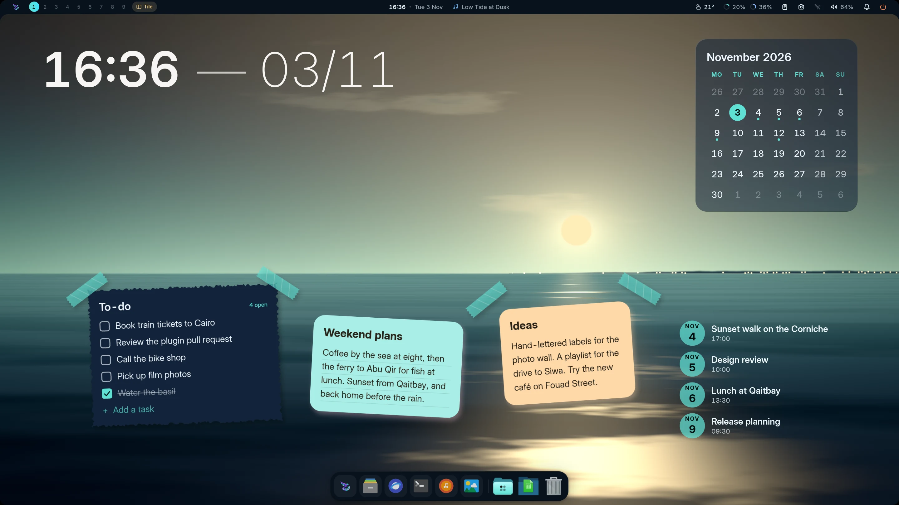
Coloured by your wallpaper
- 0.1ms typical frame build
- 10 compositors, each in its own language
- 81 plugins, switched on as you need them
- 20 languages, right to left included
The frame time is a historical figure from release builds: 95% of sampled frames finished inside the 1 ms a 1000 Hz display allows. Your display, driver and widgets change it, and Studio → Performance shows yours live. How it is measured
Fewer apps to open. More shell.
Each of these is part of the one program that draws your desktop, in the same colours, type and motion as the bar you look at all day.
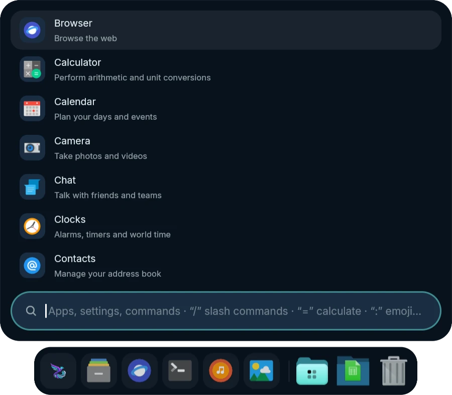
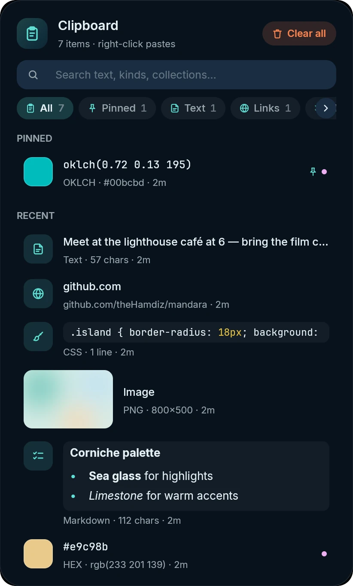
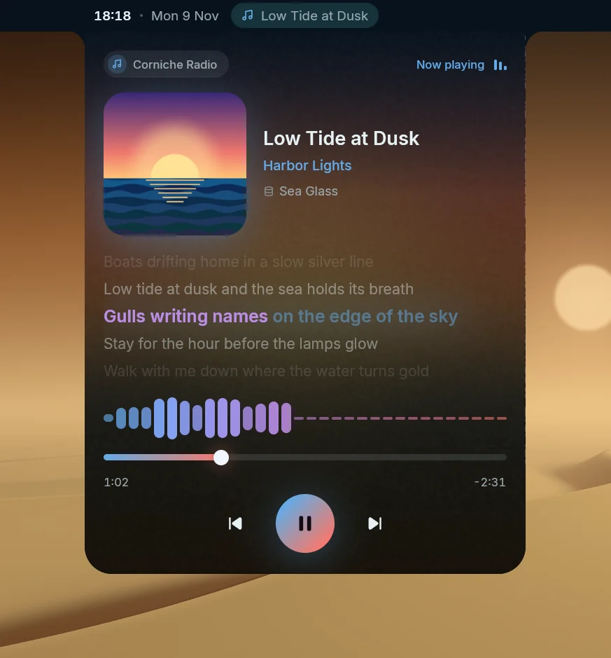
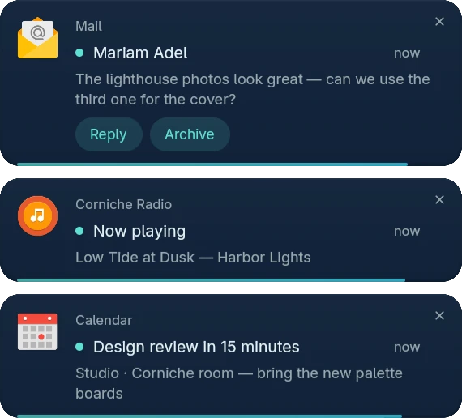
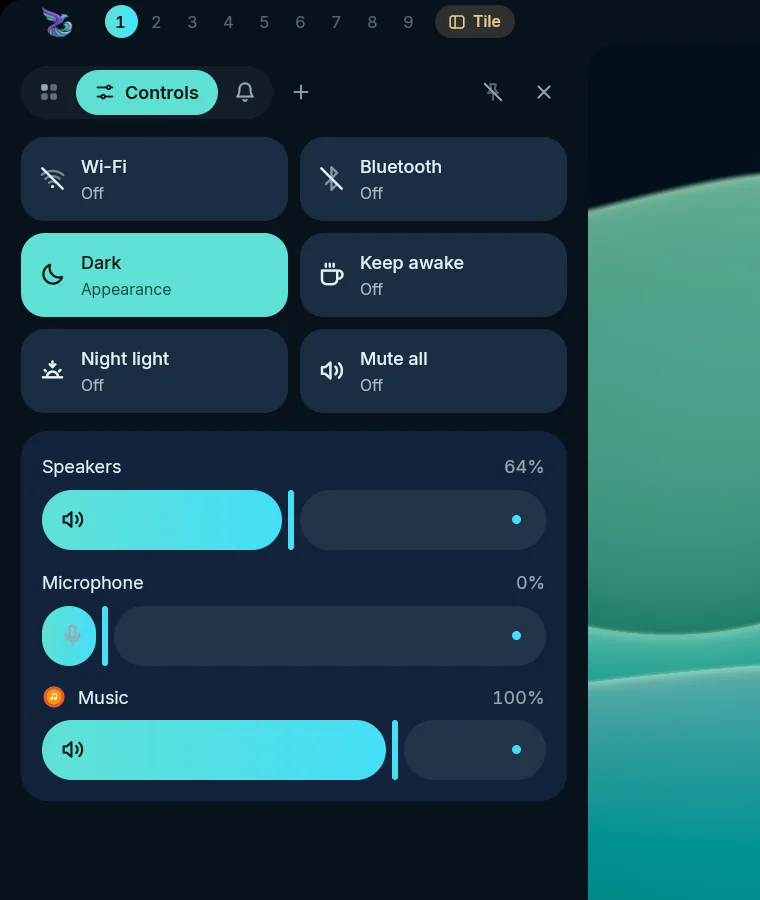
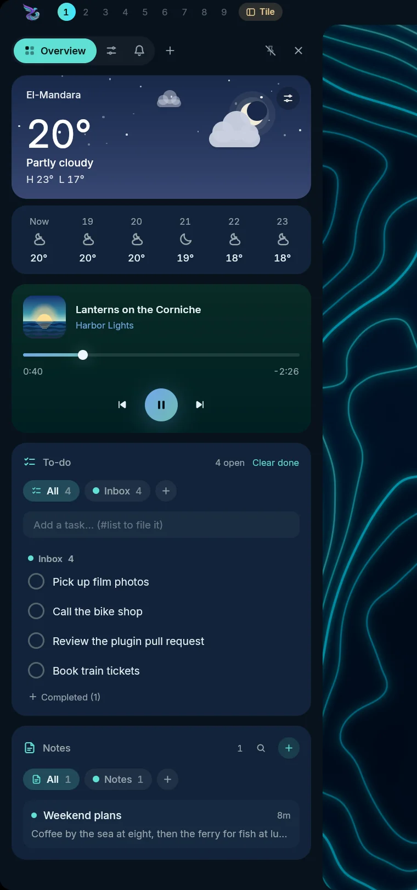
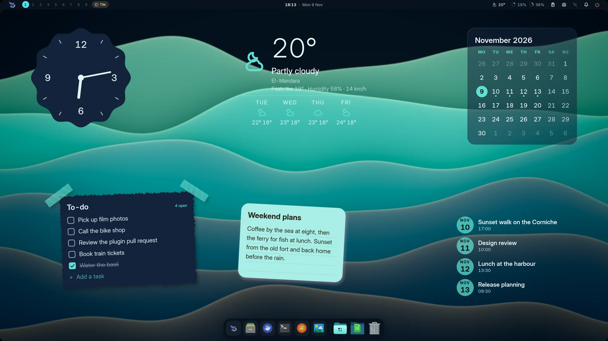
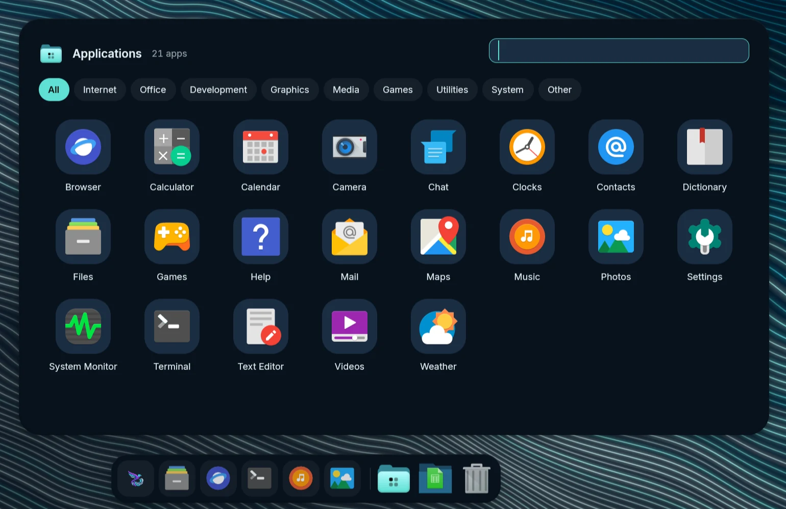
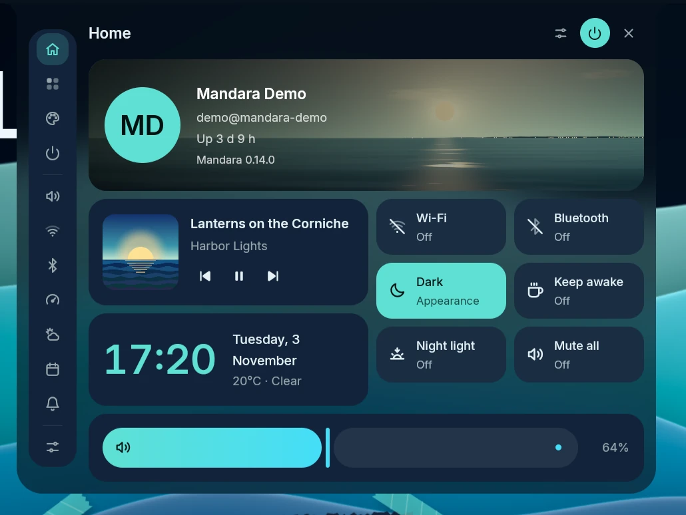
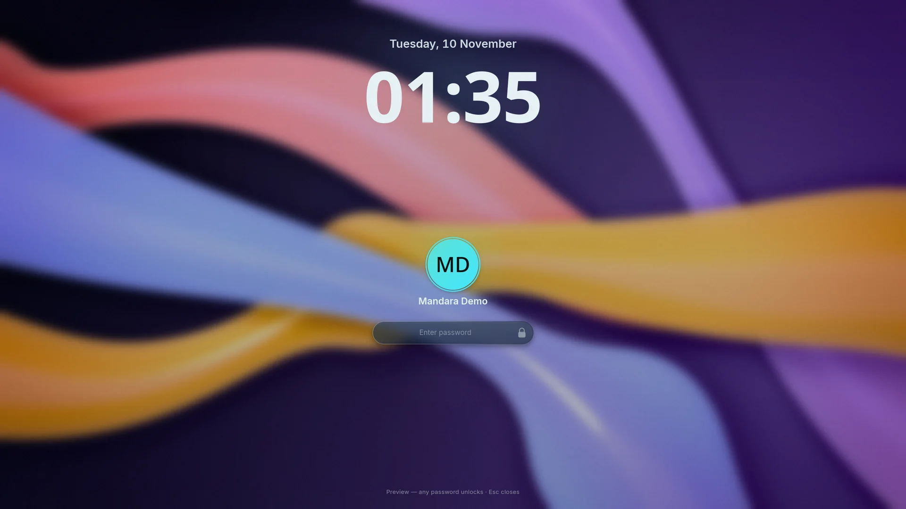
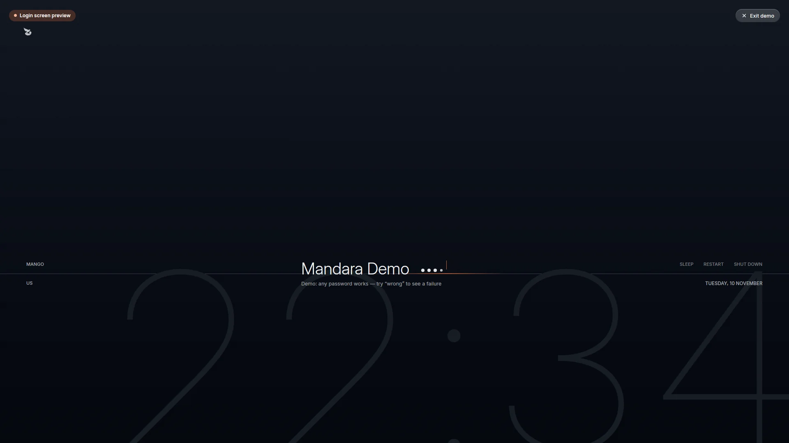
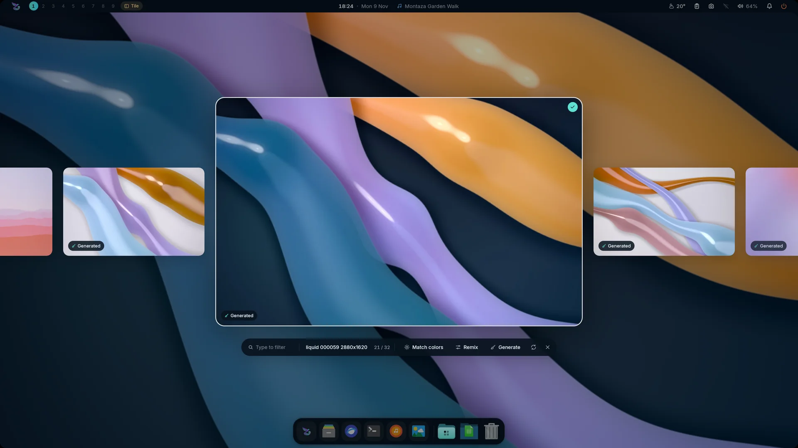
Pick a Look.
Nineteen desktops, most named for Alexandria’s coast. Each sets the bar, its own widgets, type and colours in one click, and your own widgets and bar items stay. Choose one and this page wears its palette too.
Every piece, your shape.
Real parts of the shell, enlarged. Studio → Themes → Components restyles buttons, fields, sliders, cards and the bar itself.
A shape for every character. Lock and login hide each typed character as a soft shape.
Tabular figures. Clocks and counters never jitter.
Quick settings. Toggles that answer at a touch.
Notifications. Actions, history and do not disturb.
Change it. Watch it change.
Mandara Studio is the desktop’s design desk. Colours, type, spacing, motion, widgets and plugins apply to the running shell as you drag. Meet Studio
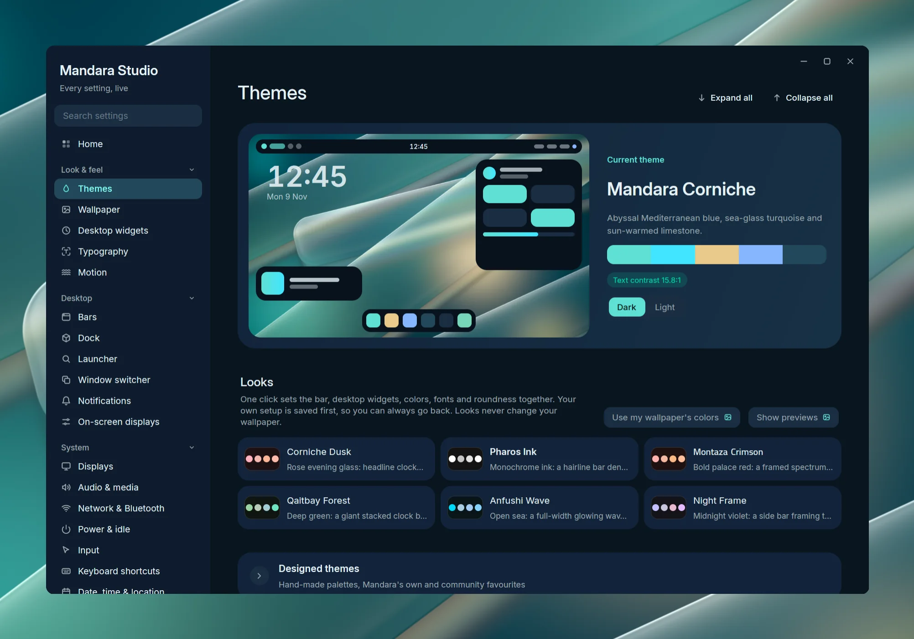
Ask in your words.
Turn on the optional AI Shell Agent in Studio, download its required models once, then type !switch to dark mode in the launcher. Control your shell in natural language: you see the exact action before it runs, and it works offline, so your words stay on your computer.
Ten compositors.
Each driver speaks its compositor’s own language. Your config gets one include line at most, checked by the compositor’s own validator and rolled back if it objects.
- MangoWMTagsChecked with
mango -pTag bitmasks with view, toggle-view and tag moves, a layout pill and keymode badge.
- NiriScrolling columnsChecked with
niri validateFollows scrolling columns and workspaces, writes lossless KDL and keeps the wallpaper behind the Overview.
- HyprlandWorkspacesChecked with
Hyprland --verify-configSpeaks Hyprland 0.57’s Lua config and the older format before it.
- UmbrielWorkspacesChecked with
umbriel config validateShows each output’s workspaces, the layout (click to cycle) and the active submap.
- SwayWorkspacesChecked with
sway --validateWorkspaces, the container layout and the binding mode; binds you already have stay yours.
- River ClassicTagsLive protocol
River 0.3’s tags, layout and mode, with settings sent over its own protocol. Your
initis never edited; you add one autostart line. - KWinVirtual desktopsPlasma keeps it
Runs inside a Plasma Wayland session through Plasma’s own protocols. Displays, rules and shortcuts stay in Plasma System Settings.
- AqueousWorkspacesLive protocol
Each output’s workspaces, windows and outputs over Aqueous’s own socket. Its settings stay in its own files; Mandara writes nothing there.
- labwcWorkspacesLive protocol
Workspaces over the standard ext-workspace protocol and windows over foreign-toplevel. Its settings stay in
rc.xml; you add one autostart line. - COSMICWorkspacesLive protocol
Each output’s workspaces over ext-workspace, and windows with their workspaces over COSMIC’s own protocols. Its settings stay in COSMIC Settings.
Twenty languages.
The shell, Studio and the login screen, with right-to-left layouts for Arabic, Persian and Urdu. The language guide
- English
- العربيةright to left
- فارسیright to left
- اردوright to left
- Español
- Português
- Français
- Deutsch
- Türkçe
- Русский
- हिन्दी
- मराठी
- বাংলা
- తెలుగు
- Bahasa Indonesia
- Kiswahili
- Tiếng Việt
- 简体中文
- 日本語
- 한국어
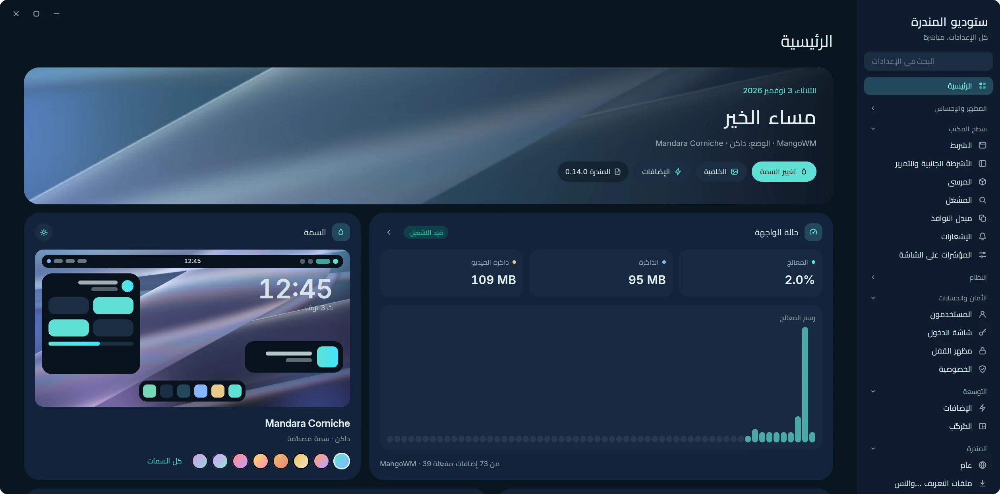
81 plugins, one shelf.
Switch on what you use. Write your own in Rust, compiled to sandboxed WebAssembly. See every plugin
Bar10
Desktop14
- Desktop clocksDesktop
- System monitorDesktop
- Desktop decorationsDesktop
- Desktop visualizersDesktop
- Now playing cardDesktop
- Calendar cardDesktop
- Desktop weatherDesktop
- Desktop world clockDesktop
- CountdownDesktop
- Desktop productivityDesktop
- Desktop skyDesktop
- Desktop shortcuts and youDesktop
- Desktop funDesktop
- Desktop infoDesktop
Productivity9
Everyday5
Media6
Look5
System15
Upkeep6
Developer5
Games2
- All 81, in the guideMore
Your hands stay on the keys.
Mandara writes these to its own drop-in and skips any chord your config already uses. Each runs as mandara msg plus the command shown. Every command
25 shortcuts
- SuperSpaceOpen or close the launcher
launcher toggle - SuperAltSpaceOpen or close the launcher
launcher toggle - SuperBShow or hide the sidebar
sidebar toggle - SuperShiftEPower and session menu
session menu toggle - CtrlAltDeletePower and session menu
session menu toggle - SuperShiftSScreenshot a region
screenshot region - SuperShiftVClipboard history
panel toggle clipboard - AltVClipboard history
panel toggle clipboard - PrintScreenshot the whole screen
screenshot screen - CtrlPrintScreenshot a region
screenshot region - AltPrintScreenshot a window
screenshot window - SuperShiftTSwitch between light and dark
theme mode toggle - CtrlShiftWPick a wallpaper
wallpaper picker toggle - AltTabNext window; let go of Alt to switch
switcher next - AltShiftTabPrevious window
switcher prev - Mute keyMute everything
audio mute-all toggle - Volume up keyTurn the volume up
audio volume up - Volume down keyTurn the volume down
audio volume down - Brightness up keyBrighter screen
brightness up - Brightness down keyDimmer screen
brightness down - Play keyPlay or pause the music
media play-pause - Pause keyPlay or pause the music
media play-pause - Next keyNext track
media next - Previous keyPrevious track
media previous - Mic mute keyMute the microphone
audio mic mute
On KWin, keep shortcuts in Plasma System Settings. On Aqueous, labwc and COSMIC, Mandara writes no bindings: add the ones you want in the compositor’s own settings.
One line to install.
Works from bash, zsh or fish. Nothing is installed if the signature check fails. The installation guide covers compositor, login and unattended options.
sh -c 'f=$(mktemp) && trap "rm -f -- \"\$f\"" 0 && curl --proto =https -fL https://thehamdiz.github.io/mandara/install.sh -o "$f" && sh "$f" "$@"' sh
- DownloadThe script fetches the release for your CPU and shows its progress.
- VerifyIt checks the release signature and checksum before running anything.
- ChooseThe Rust installer asks about your compositor and login screen.
- Log inMandara starts with your compositor. On Aqueous, labwc or COSMIC, add
mandarato its own startup settings (Aqueous, labwc, COSMIC).
Not just Linux
FreeBSD
Every release has a FreeBSD 14+ build. One line with FreeBSD’s own fetch downloads it, checks its signature and sets everything up with pkg, except the login screen: greetd isn’t packaged for FreeBSD yet, so build it first.
sh -c 'f=$(mktemp) && trap "rm -f -- \"\$f\"" 0 && fetch -o "$f" https://thehamdiz.github.io/mandara/install.sh && sh "$f" "$@"' sh- Sway, Hyprland, niri and River from ports
- Sound through OSS, PulseAudio or PipeWire
pkgandfreebsd-updatein the Updates panel
NixOS
Mandara is a flake with a NixOS module. Try it without installing:
nix run github:theHamdiz/mandaraImmutable? No problem!
On Bazzite, Silverblue, Kinoite, Bluefin, Aurora, Aeon or Kalpa, the same one-line install sets Mandara up in your home folder and adds only what your image is missing, with rpm-ostree or transactional-update.
- Nothing your image already ships gets layered again
- Tells you when a reboot is needed, and sets up the rest right away
- Mandara Login is one click away after that reboot (Studio → Login screen)
The commands you’ll use
mandara studio- Open the settings and design studio.
mandara msg <command>- Control the running shell, with
--jsonreplies. mandara commands- Every command, with its arguments and examples.
mandara setup --check- Check your compositor integration.
mandara update- See what’s new; Studio → About → Update now installs it.
Your first ten minutes
- SuperSpace Open the launcher and type to search.
- SuperB Pull out the sidebar.
- SuperShiftT Try light and dark.
- Open Studio from the launcher and pick a Look under Themes.
- Right-click the desktop, choose Add widget, and place a clock.
Good questions.
- What does Mandara replace?
- The parts around your windows: bar, dock, launcher, notifications, wallpaper, desktop widgets, lock screen, login screen and settings. Your Wayland compositor still manages the windows.
- Will it touch my compositor config?
- At most one include line. Everything else goes to Mandara’s own drop-in files, checked by your compositor’s validator and rolled back if it objects. River, KWin, Aqueous, labwc and COSMIC need no include line. Read the compositor notes.
- How fast is it?
- Spring motion and native GPU rendering keep everyday interactions responsive. Historical release samples built frames in about 0.1 ms. Studio runs separately, plugins load data when needed, and local AI inference stays off the UI thread. See the measurements, test setup and current limits.
- Can I keep my own setup?
- Yes. A first install offers configuration, startup and login choices, and updates keep your settings as you left them. Read about configuration.
- Can I control it in my own words?
- Yes, with the optional AI Shell Agent. Type
!switch to dark modein the launcher, check the previewed action, and press Enter. It runs offline on your CPU. Meet the AI Shell Agent. - How do updates work?
- Open Studio → About → Update now. Supported installs download small binary patches when available. NixOS and package-managed installs update through their own tools.
- Can I build a plugin?
- Yes. Write it in Rust, compile it to sandboxed WebAssembly and preview it as you work. Start with the plugin guide.